Tour the App
Your boat. Always ready. Wherever you are.
Here is a look at each part of SlipMate and what you can do there. For step-by-step help, see the User Guides.
Boat Readiness: Is the boat ready to go?
Before you cast off, you want to know one thing: is anything overdue, expired or missing? Boat Readiness answers that in a glance, so you don’t have to dig through logbooks, lockers and paperwork.
It watches four things for you and gives each a color:
- Service: scheduled maintenance that is overdue or coming due, by date or engine hours.
- Safety: flares, extinguishers and other safety gear that has expired or expires within 30 days, plus overdue fire suppression and bilge pump service.
- Parts: spares that are out, or below the number you want aboard.
- Docs: insurance, registration and licenses that have expired or expire within 30 days.
Green means all clear, yellow means coming up soon, and red means it needs you now. The verdict at the top sums it up: Ready, Attention Soon or Action Needed. Tap any signal to go straight to the items behind it, with the problems listed first.
It sits at the top of the Home screen and the Trips screen, updates itself as you log services, use parts and add new dates, and works with no signal. If you like, your phone can tell you when a signal turns yellow or red.
Home: Everything at a glance
Open SlipMate and Boat Readiness is right at the top, with the rest of your boat a tap away.
- Your boat’s photo, name, year, make, model, HIN and registration number on one card.
- Upcoming Maintenance, your Next Float Plan and Recent Activity (last trip, last fill-up, last hours update) at a glance.
- Four areas, Vessel, Maintenance, Destinations and Fuel, each with a live summary and a red count when something needs you.
- Search everything on the boat from the magnifying glass: specs, engines, tasks, parts, logs and destinations.
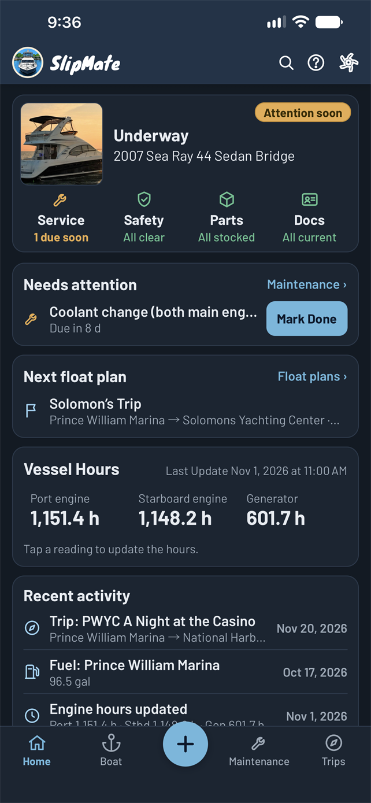
Works offshore, with no signal
Most apps stop working when the bars disappear. SlipMate doesn’t. Every record you add or change is saved on your phone first, so you can log a service at a remote anchorage, look up a part number in the engine room, or check your insurance papers at a fuel dock with no signal at all.
- Your changes sync to your account automatically when you’re back in range.
- Sign in on a new phone and everything comes down again.
- Reminders, reports and the Places Near Me list all work offline too.
- Easy to read in bright sun or at night: choose Light, Dark or Auto (follows your phone’s setting) in Settings.
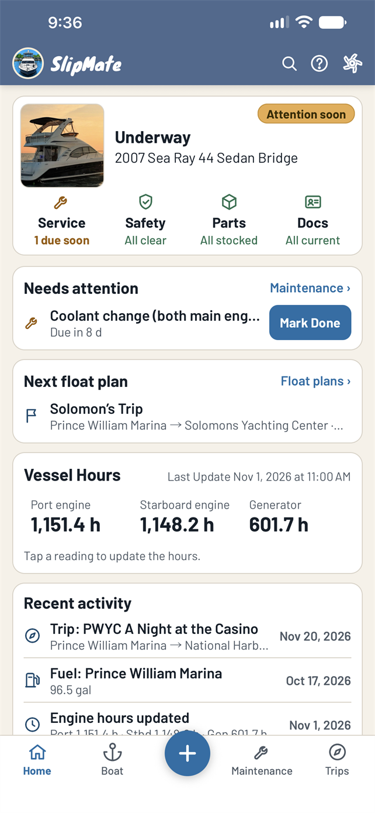
Boat Setup builds your schedule for you
Starting from a blank screen is hard. Boat Setup asks a few questions and gives you a maintenance schedule to start from.
- Search hundreds of boat makes, then pick your model.
- Tell it your water (salt, brackish or fresh) and your boating season, and it times Winterization and Spring Commissioning to match.
- Pick your engines from a catalog of common marine engines, plus your generator, dinghy engine or kicker.
- Answer yes or no for each system (AC, generator, thrusters, windlass and more) and review the services that go with it. Keep what you want, set your own intervals, skip the rest.
Suggested services and intervals are starting points. Always follow your manufacturer’s manual.
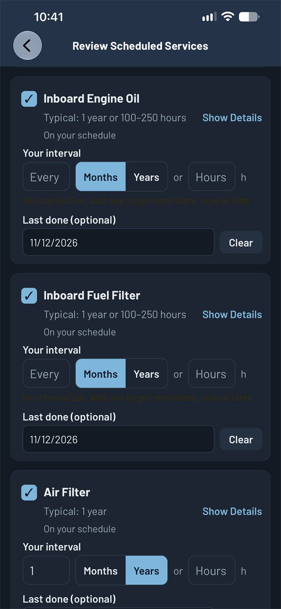
Your vessel, fully documented
The spec sheet you’re always hunting for, always with you.
- Details: make and model, years, hull, HIN, registration, MMSI numbers, home port, LOA, beam, draft and more.
- Capacities: air draft, fuel, fresh water, holding, grey water, battery banks, anchor and rode, max persons.
- Engines: every engine and generator with serial numbers, horsepower, transmission, gear ratio and propeller.
- Systems and Electronics: what’s aboard, where it is, serial numbers, firmware versions and network IDs.
- Docs: insurance, registration, captain’s license and inspections, with a photo or PDF of each and the date it expires.
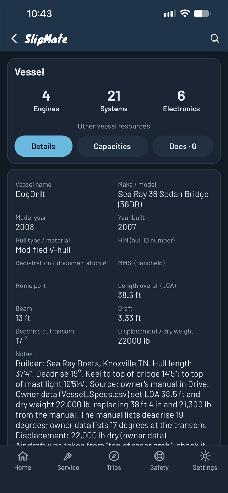
Engine hours, done right
Twin engines rarely have the same hours. SlipMate keeps a history of hour-meter readings for each engine, and every scheduled service decides how it’s measured:
- on one engine (the port engine’s oil change counts the port meter),
- on all propulsion engines, using whichever is highest,
- or by calendar only, every so many months.
A task can have both a months and an hours interval, so whichever comes first is what’s due. Generators, dinghy engines and kickers keep their own hours and their own services. One shared task can be split into a separate task for each engine with a tap.
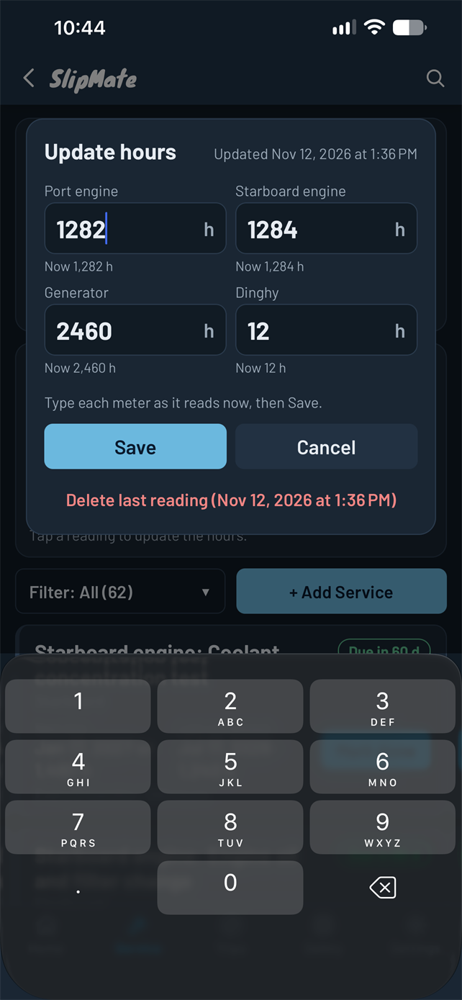
Maintenance that keeps up with you
- Scheduled: your services in the order they come due, overdue first, with next due and last completed on each card.
- Mark Done logs a service as completed today at the current engine hours, and starts the next cycle.
- Open: the jobs you’ve found but not fixed yet, with how long each has been open.
- Completed: a dated service history with who did the work, notes, photos and the hours at service.
- Manuals: owner’s manuals, parts lists and surveys as files, photos or links, ready offline.
- Optional phone reminders when a service comes due, even with SlipMate closed.
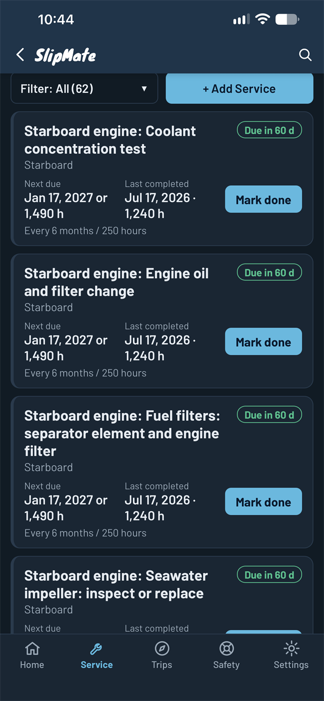
Never run out of the part you need
Keep a list of spare parts on hand: part number, where it’s stored, supplier, specification and a link to the product page. Set how many you want to keep aboard and SlipMate watches the count.
- Parts that are low or out turn the Parts signal yellow or red on Home.
- Filter by component (Engine/s, Generator, Bilge Pumps and Float Switches, and more).
- Boat Setup can add the usual parts for the services you keep.
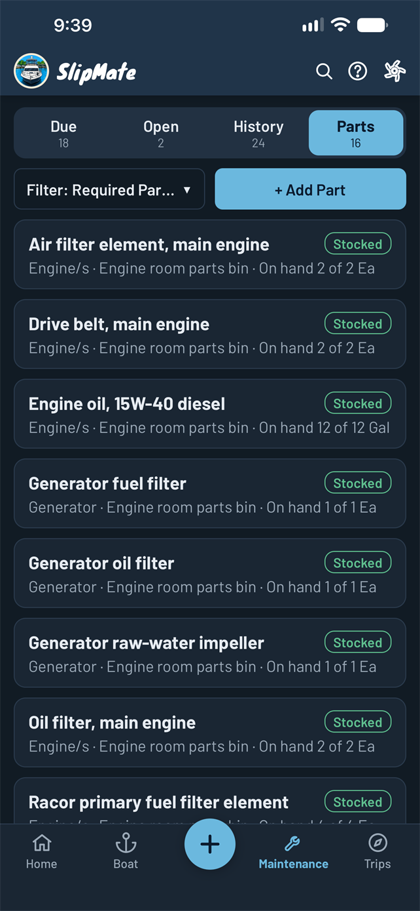
Safety gear and paperwork that never lapse
Flares, fire extinguishers, life jackets, the EPIRB battery: list each item with its quantity, where it’s stowed and the date to check it by. Insurance, registration and licenses go in Docs with their expiration dates.
- Expired or soon-to-expire items turn the Safety or Docs signal yellow or red.
- Your phone can tell you when something is about to expire, without a signal.
- Photograph a document right in the app, so the papers the marina asks for are always on hand.
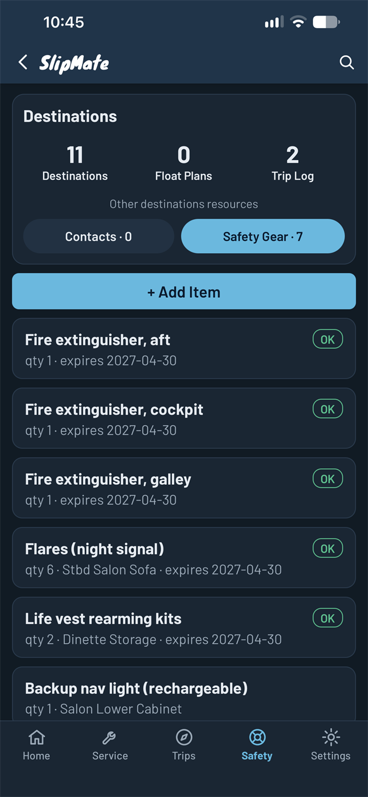
Float plans in a few taps
Let someone ashore know where you’re going and when you’ll be back. Make a float plan, then Send Plan to a contact.
- Send it as a text, or as an email with a PDF that includes the boat’s details, engines, people aboard and safety gear aboard, ready for your contact to give the Coast Guard if needed.
- Add a line asking them to call if they haven’t heard from you by a set time after you’re due back.
- Running late? Update Return Time and tell your contact. Home safe? Send All Clear.
- Complete Trip turns the plan into a trip log entry.
You send each message yourself from your phone’s Messages or Mail. SlipMate does not monitor trips or alert anyone.
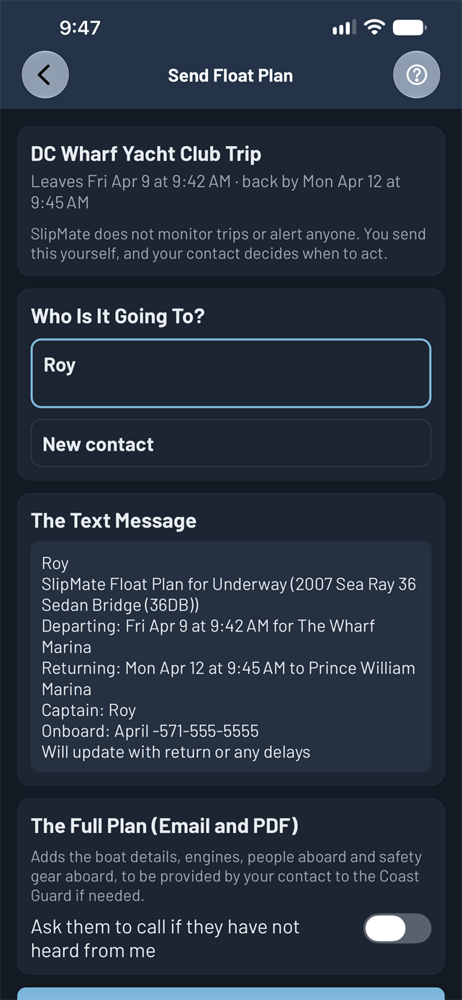
Destinations and trips
- Destinations: your marinas, anchorages, fuel docks and favorite waterfront restaurants, with position, VHF channel, depth, hours, dockage, rates, approach notes, a marina map and your own notes (slip number, dock hand, tips). Star your favorites.
- Find Places Near Me: download your state once and see nearby marinas, fuel docks, anchorages and ramps, nearest first, even with no signal. Add the ones you like to your destinations.
- Trip log: where you went, when, how far, fuel added, who was aboard and the engine hours when you got back.
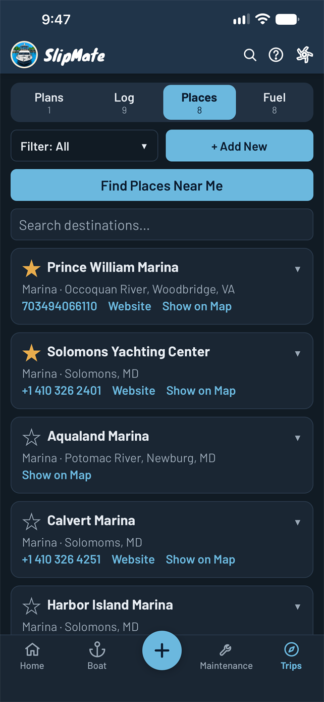
Know what your boat burns
- Fuel log: every fill-up with location, amount, price and total, plus your fuel cost this year and price-per-gallon charts.
- Fuel efficiency: log RPM, speed, fuel burn and sea conditions, and SlipMate works out your miles per gallon on the spot.
- See your readings as a Chart, a Table or a Trend over time, and see which RPM gives your boat the best economy.
- Show speed in MPH or knots, distance in miles, nautical miles or kilometers, and fuel in gallons or liters.
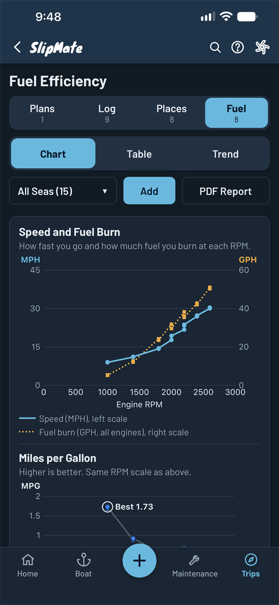
Your data stays yours
- Export All My Data saves everything as one zip file: a spreadsheet for every section of your boats, plus your manuals, docs and photos.
- Delete your account from inside the app at any time.
- Your photos and files are kept in private storage. We don’t sell your information, and we don’t show ads (see the Privacy Policy).
- Light, dark or automatic theme, and the units you prefer.
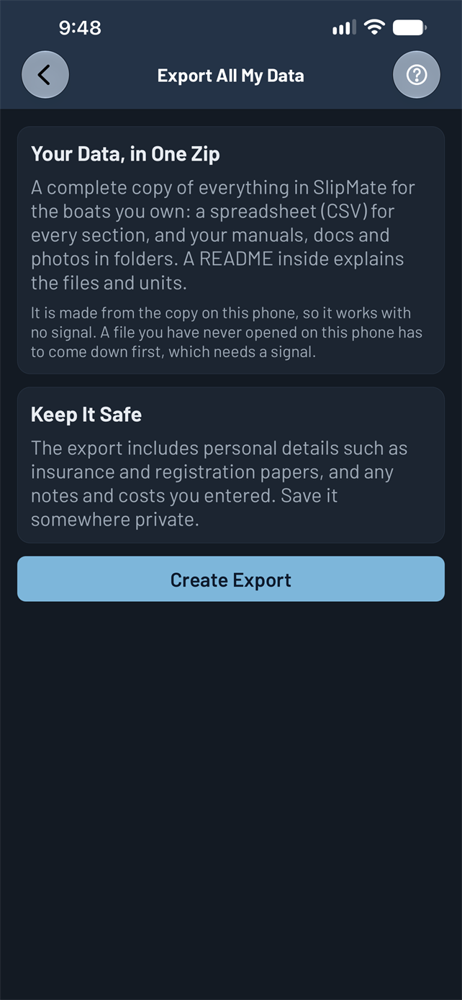
Simple pricing
One yearly subscription
- Every feature, with no free plan to outgrow and no Pro tier to upgrade to.
- Up to 2 boats on one subscription.
- 30-day free trial to start.
- Billed yearly through the App Store or Google Play. Cancel any time in your store account.
The current price is shown in the app and in the store before you subscribe. See the Terms of Use.
Get SlipMate
Questions? Read the User Guides or contact support.